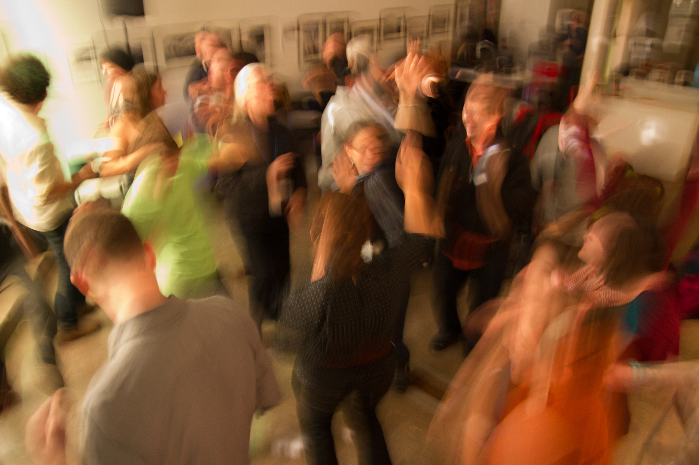

Films
Each year we sift through hundreds upon hundreds of submissions to select just the right films for our program. It isn’t easy, but it is enjoyable. We’re happy to share these creative visions with you every fall.
Panels
We always bring guests of the highest caliber to take part in the Flyway Film Festival. Don’t miss the expertise and accessibility of our esteemed experts.
Parties
Some say it is all about the films, others have claimed that the social events are the best thing about Flyway. Attend them all and decide for yourself.
The 2014 Official Flyway Selections


![]()